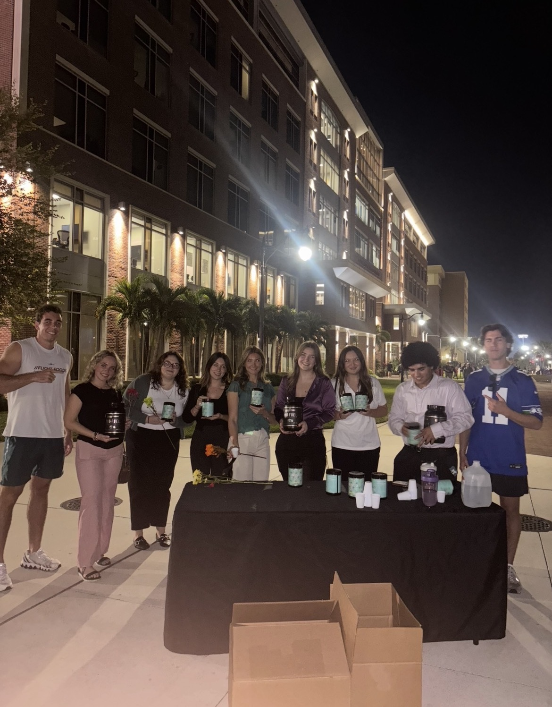

Cristian Prangikos
Hi, I am Cristian Prangikos, a sales professional with a passion for communication, personal development, and helping others become the best version of themselves.
Sales | Communication | Personal development
Build your career deliberately.
Build a career through continuous learning, clear communication, discipline, and consistent execution.
Speak clearly, listen well, and make ideas simple.
Follow through consistently, even without motivation.
Keep improving skills that make you more valuable.
Professionalism
How to level up- Show up on time, every time.
- Follow through on your commitments.
- Take ownership of mistakes instead of making excuses.
- Be someone people can depend on.
- Treat everyone with respect, regardless of their position.
End each workday by asking: "Did I leave a better impression than I found?"
Communication
How to level up- Practice speaking with confidence and clarity.
- Listen before responding.
- Ask thoughtful questions.
- Learn to explain complex ideas simply.
- Improve your writing through emails, messages, and presentations.
Every conversation is an opportunity to improve your communication.

Build connections before you need them.
Strong networks are built through genuine conversations, consistent follow-up, and a willingness to create value for other people.
Sales & Influence
How to level up- Understand people's problems before offering solutions.
- Learn to handle objections calmly.
- Focus on helping rather than convincing.
- Build genuine relationships.
- Continue studying negotiation and persuasion.
After every sales call or meeting, write down one thing you did well and one thing you can improve.
Skill Development
How to level up- Learn a new skill every quarter.
- Read books and take courses regularly.
- Find mentors who are ahead of you.
- Practice consistently instead of waiting to feel ready.
- Stay curious.
Spend at least 30 minutes each day improving a skill that increases your value.
Networking
How to level up- Build relationships before you need them.
- Follow up after meeting new people.
- Introduce people who can help each other.
- Keep in touch consistently.
- Focus on giving value first.
Reach out to one new or existing professional contact every week.
Leadership
How to level up- Take initiative without being asked.
- Stay calm under pressure.
- Encourage and support others.
- Accept responsibility for outcomes.
- Lead by example.
Ask yourself: "What would a leader do in this situation?"
Productivity
How to level up- Prioritize your highest-impact tasks.
- Eliminate distractions while working.
- Use a calendar and task list.
- Finish what you start.
- Review your progress weekly.
Begin each morning by identifying your three most important tasks.
The core skills that improve every career
- Clear communication
- Discipline
- Reliability
- Problem-solving
- Adaptability
- Leadership
- Continuous learning
- Emotional intelligence
- Time management
- Integrity
Consistency creates the advantage.
Success rarely happens overnight.
The people who build exceptional careers are not always the smartest. They are often the most consistent. Keep learning, communicate well, solve problems, and become someone others enjoy working with.
Find Cristian
Follow Cristian for more on communication, growth, sales, and becoming more valuable professionally.
Featured pages are paid placements. LifeScore may receive payment for homepage placement, notification placement, and a dedicated featured page. Placement does not mean LifeScore guarantees outcomes or personally verifies every claim.
Want your own featured page?
LifeScore builds clean, personal feature pages for people, projects, services, brands, clubs, and ideas.
Get featured